...
...
A produção agrícola é um dos processos que mais abrange o Brasil, ocupando boa parte do solo brasileiro, sendo extremamente rentável. Porém, é preciso que haja um equilíbrio justo entre o lucro, a produção e o meio ambiente, que, caso não ocorra, pode prejudicar a natureza de diversas formas.

A produção pode acabar gerando diversos problemas ao meio ambiente, como por exemplo, o desregulamento entre a taxa de extração e a taxa de reposição de recursos naturais, causando a destruição de florestas e a danificação do solo.

A poluição é normalmente um resultado do descarte incorreto de recursos químicos, como por exemplo, o descarte de defensivos agrícolas em rios, que acabam penetrando e contaminando o solo do local.

Os gases resultantes da queima de combustíveis fosseis no campo, acabam subindo para a atmosfera, causando o efeito estufa, aquecimento global e poluição a atmosfera.
Uma produção que não respeita e não cuida do meio ambiente acaba afetando o planeta inteiro, na parte da saúde, da economia e social. A poluição gera grandes problemas para todos os seres vivos, causando problemas que podem ser irreversíveis.
A produção que possui um respeito ao meio ambiente, não polui o solo, os rios e a atmosfera, consegue criar um equilíbrio entre a sustentabilidade da produção e o bem-estar do meio ambiente, gerando um espaço que favorece ambos os lados.
A agricultura no Brasil é uma das principais fontes de renda do país, gerando a maior parte do lucro e possuindo uma alta taxa de exportação para outros países, representando por volta de 26% a 29% do PIB (Produto Interno Bruto) do país.
O Paraná é um estado altamente agrícola, sendo um dos maiores do país. Algumas das produções e culturas produtivas do Paraná são:
Um futuro sustentável será alcançado no momento em que as ações que causam danos a natureza forem substituídas por métodos que promovem um melhor equilíbrio entre a produção e o meio ambiente, como por exemplo:
...
COLÉGIO ESTADUAL CECÍLIA MEIRELES
UBIRATÃ